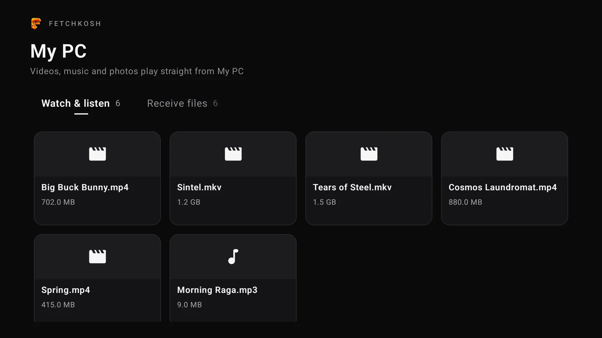

Wi-Fi and mobile data, on the same download.
FetchKosh splits a file into parts and pulls them over both connections at once, so big files finish sooner. It also plays your files on your TV and moves them between your phone and PC.
Free. No account needed.
A simulation with example speeds, sped up. Switch mobile data off to see the difference. Your speeds depend on your Wi-Fi and your mobile network.
Your phone has two connections. Use both.
Paste a link, or share one to FetchKosh from any app. The speed card at the top shows what each connection is giving you and the total.
- You set the limit. Give mobile data a daily cap (500 MB to 5 GB), or switch to Wi-Fi only with one tap.
- It keeps going. Downloads carry on with the screen off, and resume after a dropped network or a restart.
- Download tonight. Mark a file for tonight and it runs in your night data window, only while charging if you like.
- Speed test built in. Test Wi-Fi and mobile data, each alone and both together.


Watch it on the TV. Your phone is the remote.
Videos, photos and music play on the TV straight from your phone or PC, over your home Wi-Fi. Full quality, instant skipping, and no internet needed.
- Scan to connect. The TV shows a code; scan it with your phone. Nothing to type.
- A real remote. Play, pause, drag to any point, skip 10 seconds, volume, audio track and subtitles.
- Keep a copy. Save shared files on the TV, or on a USB drive plugged into it.


Every connection the PC has, and your phone's 5G too.
FetchKosh for Windows downloads over Ethernet, Wi-Fi and USB tethering together. With the phone app on the same Wi-Fi, your phone's mobile data joins in as one more connection.
- No hotspot to set up. The PC finds your phone by itself. Pair once with a code.
- Send files both ways. From any phone app: Share, then Send to PC. No cable, no mobile data used.
- Send a link. Find a download on your phone and let the PC fetch it.
Three apps that find each other on your Wi-Fi.
- Phone to TVPlay what's on your phone, and control it from the phone.
- PC to TVShare a folder from the Windows app and pick what to watch on the TV.
- Phone and PCFiles and links go both ways, with progress on both screens.
- Phone's 5G to PCThe PC borrows your mobile data for its downloads. Your daily limit still applies.
A TV or PC connects only after you approve it on your phone, and you can remove it at any time. Lending mobile data to a PC works like a hotspot, so check that your plan allows it.
The smaller things.
Pause and resume
Even after closing the app or restarting the phone. Nothing starts over.
A queue you control
Choose how many downloads run at once and drag the rest into order.
Google Drive links
Big shared files download directly, without the "can't scan this file for viruses" page.
How much faster was it?
After a download, see the time saved over Wi-Fi alone and share it as a picture.
Dark and light
One switch at the top of the phone app.
Private
No account or sign-in. Your downloads and settings stay on your devices, and a TV or PC connects only after you approve it.
Get FetchKosh.
Android phone
Android 9 or newer. Downloads over Wi-Fi and mobile data together.
Get it on Google PlayWindows PC
Windows 10 and 11, about 46 MB. It updates itself when a new version is out.
Download for WindowsAndroid TV
Android 9 or newer. Open Google Play on the TV and search for FetchKosh.
Then on your phone: FetchKosh, TV tab, Scan the TV's code.
Windows says "Windows protected your PC"? Click More info, then Run anyway. Windows shows this for new apps that aren't signed with a paid certificate yet.